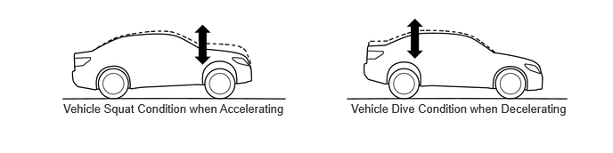
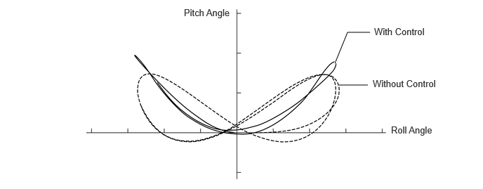

- Estimates the condition of the vehicle in accordance with the signals provided by the sensors and switches, and outputs control signals to the absorber control actuators.
- Detects the vertical acceleration rate of the body.
| Last Modified: 10-07-2025 | 6.11:8.1.0 | Doc ID: RM100000002K0N0 |
| Model Year Start: 2024 | Model: Tacoma | Prod Date Range: [03/2024 - ] |
| Title: SUSPENSION CONTROL: ADAPTIVE VARIABLE SUSPENSION SYSTEM: ADAPTIVE VARIABLE SUSPENSION CONTROL; 2024 - 2026 MY Tacoma Tacoma HV [03/2024 - ] | ||
ADAPTIVE VARIABLE SUSPENSION CONTROL
FUNCTION OF MAIN COMPONENTS
|
Component |
Function |
|
|---|---|---|
|
*1: Gasoline models
*2: HEV models |
||
|
Absorber Control ECU (with Built-in Acceleration Sensor) |
|
|
|
Shock Absorber Assembly |
Absorber Control Actuator |
Changes the damping force of the shock absorber assembly. |
|
Forward Recognition Camera |
Makes a request for damping force control to the absorber control ECU. |
|
|
Brake Actuator Assembly |
Skid Control ECU*1 |
Sends the wheel speed signal, target acceleration and deceleration speed signal, damping force cooperative control signal and brake pedal depression signal to the absorber control ECU. |
|
No. 2 Skid Control ECU*2 |
||
|
ECM |
Sends the target drive force signal to the skid control ECU*1 or No. 2 skid control ECU*2. |
|
|
4 Wheel Drive Control ECU |
Sends the L4 position condition signal to the absorber control ECU. |
|
|
Central Gateway ECU (Network Gateway ECU) |
Relays and transmits each CAN communication data signal. |
|
|
Acceleration Sensor Assembly |
Detects the vertical acceleration rate of the body. |
|
|
Steering Sensor |
Detects the steering direction and the angle of the steering wheel. |
|
|
Airbag ECU (Airbag ECU Assembly) |
Yawrate Sensor (deceleration signal) |
Detects the vehicle's longitudinal and lateral deceleration. |
|
Speed Sensor |
Detects the wheel speed. |
|
|
Stop Light Switch Assembly |
Detects when the brake pedal is depressed. |
|
|
Integration Control and Panel Assembly |
DRIVE MODE Switch |
Switches drive mode select on and off. |
|
Mode Select Switch |
Switches the drive mode. |
|
|
Combination Meter Assembly |
Drive Mode Select Indicator |
Displays the selected condition of the drive mode select. |
SYSTEM CONTROL
(a) The absorber control ECU receives signals from the sensors and switches to control the absorber control actuators. The ECU uses these signals to optimally control the damping force in accordance with the driving conditions and road conditions.
(b) In general, the lower the shock absorber damping force, the more that vibrations from rugged roads are absorbed to improve riding comfort. However, vehicle movements increase when driving at high speeds, braking or turning, and vibration suppression worsens when driving on uneven road surfaces or passing over large differences in height. Therefore, when driving on rough roads, the system decreases the damping force to improve riding comfort, and when large vehicle movements exist (sprung resonance), the system increases the damping force according to road conditions. Also, the system increases the damping force according to driving operations in order to ensure driving stability (a flat and stable drive) while turning.
(c) Vehicle Speed Sensing Control
(1) The system controls damping force in accordance with vehicle speed, aiming for both ride comfort at low speed and stability (a flat and stable drive) at high speed.
(d) Anti-pitch Control
(1) The skid control ECU*1 or No. 2 skid control ECU*2 calculates the target acceleration and deceleration speed signals based on the target braking force determined by brake pedal operations, etc., and the target drive force that the ECM determines from the accelerator pedal opening angle, etc., and sends them to the absorber control ECU. The absorber control ECU predicts the vehicle squat condition during acceleration and the dive condition during deceleration based on the target acceleration and deceleration speed signals sent by the skid control ECU*1 or No. 2 skid control ECU*2, and performs control to increase the damping force. As a result, changes in the vehicle posture are reduced to ensure a flat feeling and a sense of stability.
HINT:
*1: Gasoline models
*2: HEV models
(e) Roll Posture Control
(1) Based on steering sensor signals and deceleration signals, the damping forces of the 4 wheels are controlled to ensure the optimal vehicle posture while turning.
(2) Damping force is controlled to reduce the phase difference between the roll angle and pitch angle, thus achieving a vehicle posture compatible to the sensitivity of a human as well as comfortable steering.
(f) Repercussion Control (Sprung Speed Proportional Control)
(1) Based on acceleration sensor signals, the system detects the effects of input from the road surface (vibrations in the heave, roll and pitch directions and shock absorber expansion and contraction) and performs fine-grained control of the damping forces of the 4 wheels. The highly responsive actuator greatly contributes to the fine-grained control, naturally dampening large vehicle movements to achieve pleasant riding comfort and a superior flat feeling.
(2) According to the vehicle speed in the heave, roll and pitch directions, the solenoid current (damping force) is precisely controlled in a continuous manner as shown below to naturally and steplessly suppress vehicle vibrations. Also, quick damping force switching response and an interval switching characteristic allow the vehicle to maintain a flat posture and cut off shocks even from road surfaces with large unevenness together with minute vibrations.
- The solenoid current (damping force) is increased when the vehicle moves quickly. On the other hand, the solenoid current (damping force) is increased and decreased in small amounts when the vehicle moves slowly.
- Based on the amount of vehicle movement and shock absorber expansion and contraction, if the shock absorber damping force is extending vehicle movement, the solenoid current (damping force) is reduced, but if the force is suppressing vehicle movement, the solenoid current (damping force) is increased.
(g) Roughness Sensing Control
(1) The system detects the unpleasant vibrations that occur when driving on rough roads based on acceleration sensor signals, and performs control to decrease the damping force. As a result, the rough feeling is eased to ensure riding comfort.
(h) Unsprung Damping Control
(1) The system detects unsprung resonance based on speed sensor signals and performs control to increase the damping force. As a result, unsprung resonance (clattering) is suppressed to ensure the road contact performance of the tires.
(i) VSC Operation Control
(1) The system appropriately controls the damping force according to whether the vehicle is sliding laterally and changes in the slipperiness of the road surface based on damping force cooperative control signals from the skid control ECU*1 or No. 2 skid control ECU*2, improving VSC effectiveness.
HINT:
*1: Gasoline models
*2: HEV models
(j) Pre-collision System Operation Control
(1) When the forward recognition camera determines that a collision may occur, the system appropriately controls the damping force of the shock absorber based on damping force cooperative control signals. For details, see the Pre-collision System section.
(k) L4 Drive Mode Control
(1) When the L4 position of the transfer is selected, riding comfort and driving performance during off-road driving are ensured by optimally controlling the damping force for off-road driving.
(l) Mode Switching Function
(1) The function automatically switches the damping force control mode between the 3 types selected by drive mode select operations: "SPORT", "NORMAL" and "COMFORT".
|
Drive Mode |
Damping Force Control Mode |
Outline |
|---|---|---|
|
NORMAL |
NORMAL |
Achieves a good balance of high-level steering response, flat feeling, sense of stability and riding comfort. |
|
ECO |
||
|
SPORT S |
||
|
SPORT S+ |
SPORT |
Mainly uses the hard damping force range to further emphasize steering response, flat feeling and stability, achieving sporty driving. |
|
COMFORT |
COMFORT |
Mainly uses the soft damping force range to achieve a more comfortable ride. |
|
*1 |
DRIVE MODE Switch |
*2 |
Mode Select Switch |
|
*a |
Drive Mode Select |
- |
- |
FAIL-SAFE
(a) If a malfunction occurs in the AVS, the absorber control ECU prohibits the damping force control.
DIAGNOSIS
(a) The absorber control ECU will also store a Diagnostic Trouble Code (DTC). The DTC can be accessed through the use of a Global TechStream (GTS). For details, refer to the Repair Manual.